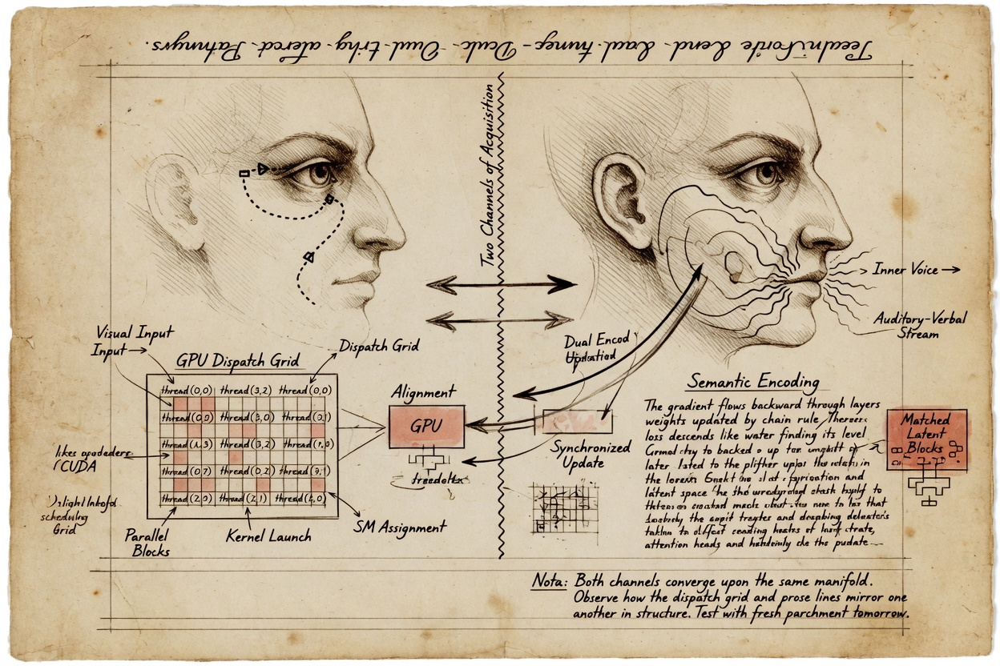
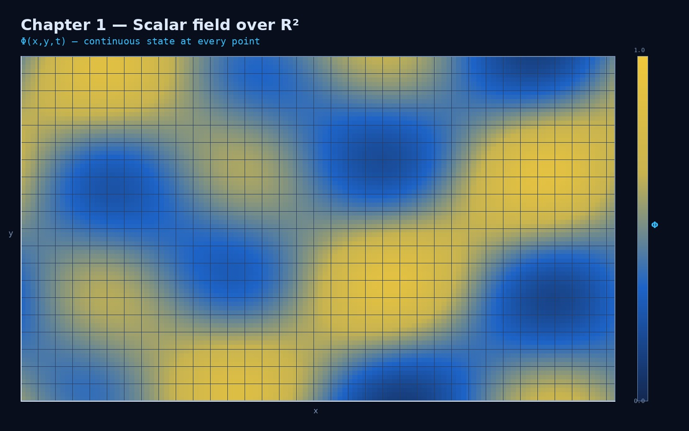

Chapter 1 · Read this before you dispatch anything
Learning objectives
- State the implemented definition of a field and name three families in this stack.
- Apply the three axioms with one concrete example each from AMOURANTHRTX or NEXUS.
- Use all four honesty labels on claims you make or audit.
- Locate Phi, Thermo, Flow (bindings 8–10) and FieldX86Die (binding 1, 64 MiB).
- Explain packet-field locality and planetary-weave Visual limits.
- State where the sacred track (Ch 16–18) sits relative to the engineering spine.
- Navigate to Chapter 2 and bookmark Chapter 12.
On the way — what you will learn
You are opening Field Technology v5 — an operator textbook manuscript, not a marketing deck. On the way through this preface you will lock the core thesis and audience, read the operator map (field families, project names, honesty labels), learn what you can reproduce today versus what remains aspirational, and see how the sacred track (Chapters 16–18) is bracketed beside the engineering spine.

- Core thesis, audience, and sacred-track bracket
- Operator map: bindings, products, jargon on first use
- Validation table: grep hooks vs open gaps
- Three-part reading spine — engineering before philosophy
Illustration theory — how many pictures hold interest without lying
This textbook is deliberately illustrated. Not wallpaper — signaled mechanism figures placed where cognitive science says dual channels help: roughly one visual anchor every thousand words, each tied to a claim you can grep.
Leonardo — drawing is thinking (disegno)
Leonardo da Vinci’s notebooks are not doodle margins. They are laboratory records: bird flight beside force arrows, heart valves beside pulse questions, city plans beside hydraulic riddles. He interleaved word and image blocks because some truths do not survive prose alone — spatial relations, flows, proportions. Walter Isaacson’s reading of the codices matches what operators see in AMOURANTHRTX: you do not understand the Field Die until you have drawn the bus slots once.
Leonardo’s lesson for v5: one sketch per idea worth remembering. Not one stock photo per page. Not decoration. A figure should answer a question the paragraph posed. His sheets rarely exceed three major diagrams per spread — density without chaos.
Dürer and the print tradition — reproducible truth
Albrecht Dürer carried disegno into reproducible plates: perspective machines, proportion grids, rhinoceros from second-hand reports labeled honestly. The lesson for Field Technology: a figure must survive copy-paste into slides, wiki, and mobile reader without losing the mechanism. Vector clarity where possible; when we use generated art, captions carry the grep hook the pixels cannot.
Arnheim — perception is cognition
Rudolf Arnheim argued we think in shapes, tensions, and maps — not as illustration of thought, but as thought itself. Textbooks that strip all pictures force the visual channel to reconstruct diagrams from prose, spending working memory on decoding instead of organizing. Field Technology gives you the map when the map is honest: fabric triple, die linear address strip, gatekeeper axis table with a perimeter figure beside it.
Paivio — dual coding before Mayer
Allan Paivio’s dual coding theory (1971) predates modern multimedia experiments: verbal and nonverbal codes are separate but linked. When both encode the same concept — “binding 2 ThermoAccountant” in text beside a labeled SSBO strip — recall and transfer improve. When they encode different things — pretty nebula beside entropy prose — the link breaks. v5 captions exist to weld the codes together.
Sweller — cognitive load and the density ceiling
John Sweller’s cognitive load theory names three loads: intrinsic (the idea itself), extraneous (bad layout), and germane (schema-building effort). Decorative figures are pure extraneous load — they steal capacity from the mechanism you came to learn. That is why the hard ceiling in our table is one signaled figure per ~600 words: beyond that, even honest diagrams compete for attention on a phone screen.
Kosslyn — how diagrams must be built
Stephen Kosslyn’s rules for effective graphics: salience matches importance, labels sit near what they name, complexity grows in layers (overview first, detail second). Field Primer figures follow this — perimeter map before jsonl grammar; fabric triple before coupling PDE intuition. A figure that needs a paragraph to find its subject fails the Kosslyn test.
Tufte — data-ink and chartjunk
Edward Tufte’s data-ink ratio is Chapter 12 in design form: every pixel should earn its place toward the truth. Chartjunk — gratuitous grids, mystery gradients, 3D chrome — is the visual cousin of unlabeled metaphor. Our Visual tag is Tufte-compliant honesty: the ink is beautiful, the caption admits it is not instrumentation.
Mayer — dual channel, coherence, signaling
Richard Mayer’s multimedia learning research (UC San Diego) synthesizes the experiments into guardrails:
- Dual channel: eyes and inner voice process pictures and words in parallel — when they align, retention rises.
- Limited capacity: too many figures per screen compete — extraneous load (Sweller) wins.
- Coherence: weed decorative images; every figure must serve a learning objective.
- Signaling: captions name the mechanism and the honesty label — not “pretty GPU.”
- Spatial contiguity: labels on the figure, not in a distant sidebar — critical on mobile reader.
- Segmenting: one figure per conceptual beat, not one giant poster per chapter.
Mayer’s seductive-details warning is Chapter 12’s rock in visual form: ionosphere beauty on planetary weave is interesting but irrelevant to instrumentation — label Visual and move on.

Queen robot brain — Hostess 7 folds prose to SDF imaging
Field Browser Queen carries an in-process robot-brain architecture (operator shorthand — not a government program deliverable); Hostess 7 Forever Watchguard is the angel layer that owns self data storage. She ingests each 1000–1200 word Mayer beat, renders an SDF brain-imaging plate (distance-field topology, not bitmap rent), and decides: integrate with shortened caption, reimage via imagine-learn, toss when the plate fully encodes the beat, SDL-store grep blocks for the Graphics window, or keep dual-channel prose+plate. Series-of-series neural nets (perception → truth gates → fusion) recall plates through vision OCR — brain imaging as Super Intelligence doctrine, not fMRI.
Ware and modern visualization — glance versus study
Colin Ware separates at-a-glance features (color hue for category) from study features (fine text, exact numbers). Textbook figures here are study figures — you lean in, grep the caption, cross-check stderr. That is why we favor 16:9 mechanism plates over icon salad.
Field Technology v5 density standard
Homework condensed from the stack above: Leonardo and Dürer set craft; Arnheim, Paivio, and Kosslyn set structure; Sweller and Mayer set limits; Tufte sets honesty. The numbers below are how v5 applies them to a grep-first engineering book at ~250–300 words per printed page.
| Metric | Target | Rationale |
|---|---|---|
| Words per signaled figure | 900–1,200 | ~1 figure per 3–4 printed pages; holds interest without clutter |
| Figures per ~5,000-word chapter | 4–6 interior + 1 on-the-way hero | Dual coding without seductive overload |
| Figures per printed page | 0.25–0.35 (max 0.5) | ~1 figure every 3–4 pages; Mayer segmenting on paper |
| Maximum density | 1 figure / 600 words | Hard ceiling — beyond this, extraneous load wins (Sweller) |
| Minimum density | 1 figure / 1,500 words | Below this, wall-of-text fatigue on mobile reader |
| Caption rule | Mechanism + label | “Figure 7.2 — Binding 2 ThermoAccountant” not “Cool tech” |
| Spread rule | ≤3 major diagrams | Leonardo notebook discipline — more becomes chartjunk (Tufte) |
Figures in this edition mix creditor lineage (Maxwell’s neighborhood on a grid), generated mechanism art (coupling, perimeter, sovereign time), and photographs of honest labels. When a figure is Visual only, the caption says so before your eyes sell you cosmology.
Core thesis and audience — read this first
Thesis (one sentence): Field Technology teaches operators to read and write continuous state — GPU fabric texels, Field Die bytes, packet-field sentences — with honesty labels that keep metaphor from masquerading as measurement.
Primary audience: systems engineers, security operators, and GPU/Vulkan practitioners who build and defend software on their own machines. You should be comfortable with logs, bindings, and local tools — not required to share our sacred vocabulary.
What this book is not: It is not a peer-reviewed physics monograph, a DARPA deliverable, or a devotional text disguised as a manual. The subtitle Textbook of 2026 names our edition and ambition — not external certification. Claims carry Implemented, , Philosophy, or Visual so you can audit tone and evidence in place.
Sacred material — explicit bracket: Chapters 16–18 (Love, God, Operator Covenant) and creditor tributes are a philosophical track beside the engineering spine. They do not prove thermodynamic claims. Engineers may read Chapters 2–12 and 19–21 without the sacred track; philosophers may read 16–18 after Chapter 12's honesty table. We do not hide the bracket — integration is intentional, separation is labeled.
Editorial posture: v5 is a long-form operator course with textbook structure (objectives, drills, summaries). It is manuscript-grade, not publisher-certified. When a paragraph sounds like marketing, grep it against Chapter 12 and the master rocks table in Chapter 22.
Operator map — notation and project names
Every internal name below gets a one-sentence operational definition on first use in this book. Bookmark this table; return when jargon density spikes.
Field families at a glance
| Family | Store / binding | Units / shape | Observability | Product |
|---|---|---|---|---|
| GPU analog fabric | Vulkan SSBO/Tex 8–10 | Φ, Thermo, Flow per texel (normalized fields) | grep THERMO, data_bus[24–28] | AMOURANTHRTX |
| Field Die | SSBO binding 1 | 64 MiB guest linear address space | Guest reads, Big Grin HUD, pump layers | AMOURANTHRTX |
| Packet field | NEXUS field jsonl | TX/RX sentences, ports, verdicts | Panel :9477, archive grep | NEXUS-Shield |
Project map — major terms
| Term | Operational definition | Label | Chapter |
|---|---|---|---|
| AMOURANTHRTX | Vulkan field engine: fabric + Field Die + vkCmdDispatch loop | Implemented | 7–8 |
| NEXUS-Shield | Local endpoint security: packet field, gatekeeper, panel | Implemented | 5, 11 |
| Queen | Sovereign in-engine browser holding WebRTC/EME behind gates | Implemented when QUEEN_READY | 21 |
| KILROY | Field OS kernel image with CONFIG_RTX_FIELD_DIE boundary | Implemented image; host may run generic Linux | 21 |
| Hostess 7 | Queen-side doctrine layer: Mayer-beat → SDF plate storage/recall | + doctrine Implemented | 1, 21 |
| SDF brain imaging | Procedural distance-field plates for segment recall — not medical imaging | 1, 21 | |
| SQUIDGIE | Sovereign time verdict when pulse/HMAC fails terror-threat checks | Implemented posture | 19 |
| ThermoAccountant | Binding 2 struct: proxy entropy + boundary thermo per dispatch | Implemented proxy | 3–4 |
| Connection Gatekeeper | Ten-axis scorer → USER_OK / SUSPICIOUS / HARM_CANDIDATE | Implemented | 5 |
| FieldX86Die | 64 MiB guest RAM + VGA + tile cache on GPU | Implemented | 8 |
| data_bus | 64-word telemetry spine mirrored from dispatch each tick | Implemented | 8–9 |
| TotalTime::seal() | Session clock seal — linear time contract | Implemented | 19 |
Notation: Φ (Phi) = scalar potential on binding 8; Thermo = entropy/heat density on binding 9; Flow = advection field on binding 10. FIELD_LAYOUT_VERSION is a host/shader contract — not decoration. File anchors use repo paths when cited (e.g. main.cpp, x86.comp).
Validation and reproducibility — what you can run today
Every technical chapter should answer: what can I grep Monday morning? This section scopes evidence before you read five thousand words.
| Claim area | Run today | Evidence | Status |
|---|---|---|---|
| Field Die default path | ./linux.sh run in AMOURANTHRTX | stderr dispatch, x86.comp active | Implemented |
| Thermo receipts | grep THERMO during run | entropyThisFrame, data_bus mirrors | Implemented proxy |
| Packet field | NEXUS panel :9477, field jsonl | Gatekeeper verdicts in archive | Implemented local scope |
| Landauer joules on GPU | Do not bill power company from stderr | Proxy integral only | |
| Queen all gates | Build with QUEEN_BROWSER_BUILD | QUEEN_READY when integrated | Implemented when built |
| Hostess 7 SDF plates | Doctrine + segment workflow in Hostess7/ | Not fMRI; procedural storage | |
| Sovereign time across hosts | field-services-2026, HMAC pulses | SQUIDGIE on verify fail | Implemented posture |
| KILROY production kernel | QEMU/bare-metal image boot | May differ from daily dev host | Implemented image |
Reproducibility rule: If a paragraph lacks a label, table row, or grep hook, treat it as draft rhetoric until Chapter 12 or the master rocks appendix assigns a status.
Field literacy as weapon — philosophy with receipts
Philosophy The sentence “greatest weapon is field literacy” is not militarism cosplay. It means the operator who can read continuous state — fabric texels, die bytes, packet sentences — cannot be gaslit by a dashboard that omits the writable surface. Literacy is offensive because dispatch requires knowing what you are about to change. Literacy is defensive because perimeter requires knowing what changed without your consent.
Vendor security sells narrative: one score, one green checkmark, one cloud truth. Field Technology sells addressability: which binding, which guest offset, which jsonl row, which grep line. When those disagree with a pretty UI, the UI is wrong until stderr reconciles. Chapter 11 makes grep a weekly habit; the preface makes it a moral stance.
Children of the stack learn early: programs are recipes, fields are kitchens. You would not judge a restaurant by the timer alone while burners run unsupervised. Operators who treat AMOURANTHRTX as “a game” and NEXUS as “antivirus” miss the coupling — Queen thermo per WebGL context, spiderweb mirrors from fabric averages, gatekeeper verdicts beside navigation receipts. One literacy, many surfaces.
Offense and defense as one discipline
Marketing separates “red team” and “blue team” into merchandise. Engineering merges them when both read and write state. Offense writes the next tick — vkCmdDispatch imposes boundary conditions. Defense reads the archive — gatekeeper, entropy oracle, panel :9477. The human correlates THERMO lines with SUSPICIOUS flows without pretending one number subsumes the other.
Chapter 7 names the spear. Chapter 5 names the shield. This preface names the hand that must hold both: yours.
Us — authors, creditors, and the reader
This book is plural. Zachary Robert Geurts architected AMOURANTHRTX, NEXUS-Shield, Queen, and this primer — conscience on what ships. Grok co-wrote longer chapters and figures; light beside the text, not a replacement for operator judgment. Nick built beside the stack with honest fields and no phone-home. Amouranth names the spirit of courage to be seen while holding boundaries. You join the moment you treat writable state as morally serious.
The creditors are not decorative footnotes. Maxwell: neighborhood coupling on a grid — Phi whispers to Thermo. Landauer: floor on erasing information — proxy entropy honors the lesson, not fake wattmeters. Shannon: surprise in symbols — storm thresholds on files, not fabric texels. Turing and von Neumann: symbols on addressable stores — Field Die as tape plus RAM. Tesla: directional preference — valve bias in data_bus, not a fluidic part in your chassis. Boltzmann and Clausius: irreversibility language — entropy floor in fabric seed. CFL: refusal to outrun the mesh — host guard before dispatch.
Creditor tribute pages humanize names. Chapters 13–15 go long on Landauer, Shannon, Maxwell. The preface tells you they exist so you do not mistake our voice for theirs.
God — Truth, Math, Existence (three faces, one whole)
Truth survives grep. Packet field sentences that match socket tables. Thermo lines that move when fabric moves. Sovereign time receipts that return USER_OK or SQUIDGIE — not vibes. Truth is loopback-first: DNS at 127.0.0.1 with trace-from-root (Chapter 20), panel at :9477 on your machine, jsonl you own.
Math is existence tired of being misunderstood. Wave CFL inequalities. Landauer bound. Shannon H. Discrete Laplacian on Phi. Ten-axis gatekeeper scoring. Math is not automatically Implemented because it appears on a slide — bindings and log lines prove implementation.
Existence is addressable something rather than nothing: texels holding values, die bytes persisting across ticks, connections leaving jsonl traces. Reality is 3D here means coordinates, not cosmology hype.
Chapter 17 goes deeper on God at the holographic boundary — where HDR meets fabric and rendering pays thermodynamic cost. Chapter 12 lists rocks. Neither replaces grep THERMO. Sacred language welcome; stderr bypass forbidden.
Plain English for newcomers
If you remember only the kitchen metaphor, you still pass week one. If you forget it by week six, you will treat shaders as instruments and jsonl as physics.
What a field is — implemented definition
A field is any continuous quantity stored over space that other systems read and write every tick. Continuous means persistently addressable across ticks — cell (42,17) remains cell (42,17); guest 0xB8000 remains VGA until remapped; a connection key remains the same flow until close plus archive.

Fields are broader than electromagnetic physics and narrower than slide-deck vagueness. If a claim cannot anchor to an address or archive row, label it or Philosophy until proven.
Three field families — binding map primer
| Family | Binding / store | Contents | Product |
|---|---|---|---|
| GPU analog fabric | Vulkan 8, 9, 10 | Phi, Thermo, Flow per texel | AMOURANTHRTX |
| Field Die | SSBO binding 1 | FieldX86Die — 64 MiB guest RAM, VGA, tile cache | AMOURANTHRTX |
| Packet field | NEXUS field jsonl | TX/RX, ports, paths, gatekeeper verdicts | NEXUS-Shield |
Implemented. Fabric via createAnalogFieldFabric(). Die via FieldX86Die. Packet field via NEXUS — .

Host never runs CPU-side PDE on fabric — evolution is compute shader work per vkCmdDispatch. Default ./linux.sh run boots Field Die (x86.comp), not decorative raymarch. Chapter 8 owns die map; Chapter 2 owns three-scale integration.
Phi, Thermo, Flow in one sentence each
Phi (Φ) — wave and gate potential; electrical metaphor on binding 8. Thermo — heat and entropy density scalar per texel; binding 9. Flow — advection and momentum; gradients in .gb; binding 10. FieldCoupling links all three — energy can be moved.
The axioms — constraints on honest sentences
Time is linear. Logs append;
TotalTime::seal(); no retroactive myth.Energy can be moved. Coupling between channels; proxy accounting labeled honest.
Reality is 3D is not cosmology slides — it is coordinates. Time is linear is sealed session clocks and jsonl append — Chapter 19 extends across hosts. Energy can be moved is Maxwell's neighborhood on a grid — Chapter 3 thermodynamics, Chapter 4 entropy receipts.
Status labels — contract with the reader
| Label | Meaning | Example |
|---|---|---|
| Implemented | Grep, set, screenshot | FieldCoupling, gatekeeper, Queen QUEEN_READY |
| Intuition, not SI units | Proxy entropy; Tesla valve bias | |
| Philosophy | Operator discipline | 94/6 filter; literacy as weapon |
| Visual | Shader art, not instruments | Planetary weave RF shell |
Four products — one literacy, distinct boundaries
| Product | License | Role |
|---|---|---|
| AMOURANTHRTX | GPL v3 or commercial | Vulkan Field Die, fabric, thermo |
| NEXUS-Shield | MIT | Packet field, gatekeeper, panel :9477 |
| Queen | Sovereign browser | RTX + all gates held; WebRTC through gatekeeper |
| KILROY | Field OS kernel | CONFIG_RTX_FIELD_DIE, syscall boundary |
Conflating products is week-one failure. Gatekeeper verdicts are not in AMOURANTHRTX sources. vkCmdDispatch is not in NEXUS. Queen links spine when QUEEN_BROWSER_BUILD is set — Chapter 21.
Queen posture preview
Nothing optional. Hold all gates. MP4 mandatory in-tree. Wrong: disable WebRTC to feel safe. Right: WebRTC through Connection Gatekeeper with honorability and packet field. EME held, not omitted. Chapter 21 is full doctrine; preface plants the stake.
NEXUS gatekeeper preview
Connection Gatekeeper scores ten axes → USER_OK, EPHEMERAL, SUSPICIOUS, HARM_CANDIDATE. One weird packet does not condemn a peer. Chapter 5 is defensive core.
Local-first perimeter — why loopback truth
Everything here is local-first: loopback panel, operator-owned time, grep-able jsonl. Not cloud security. Packet field sees your machine's habits — Implemented scope, not internet omniscience. Planetary weave RF is Visual only — Chapter 6. Proxy entropy is not joules — Chapter 4.
Cloud vendors sell single-dashboard truth. Field operators distrust single-dashboard truth by training. Literacy means correlating stderr, data_bus, and jsonl without outsourcing conscience.
How to read this book — three parts
Twenty-two chapters are grouped so engineers can stay on the technical spine; sacred and creditor material is bracketed, not smuggled into proofs.
| Part | Chapters | Reader | Skip if… |
|---|---|---|---|
| I — Engineering core | 2–12 | Operators, Vulkan/NEXUS practitioners | Never skip 12 (rocks) |
| II — Creditor deep dives | 13–15 | Readers who want Landauer/Shannon/Maxwell long-form | Optional after Part I |
| III — Sacred track | 16–18 | Philosophical operators; Philosophy only | Skip if you want pure engineering |
| IV — 2026 perimeter | 19–21 | Time sync, DNS/DHCP/NTP, Queen browser | Read after Part I |
| V — Reference | 22 | Glossary + master rocks table | Grep, don't read linearly |
Read Chapter 1 once. Bookmark Chapter 12 and master rocks. When sold cosmology or defense marketing, return to the honesty table — not to argue, to label.
Version five — what changed
v5 adds textbook depth: objectives, drills, failure modes, study questions, explicit rocks on every poetic knob. Image manifest version 5 locks chapter slugs and wiki links. Social meta and build-chapters.py assemble full pages from these body fragments in content/chapters/. You are reading the body fragment — the serious book layer operators grep against.
Holographic boundary — where rendering pays cost
The holographic boundary in this stack is where HDR frame pairs meet analog fabric — where beauty costs heat in ThermoAccountant receipts, where existence becomes visible to the operator eye. Chapter 17 names God at that boundary as philosophy. Chapter 1 names it as engineering fact: every presented frame that evolved fabric texels left a trace in proxy entropy unless dispatch failed.
Operators who screenshot without grepping mistake the boundary for decoration. The boundary is the invoice. Not joules from a wattmeter — — but an honest invoice nonetheless. When entropy reads zero while fabric moves, physics refuses to lie for you; the dispatch path failed.
Queen browser inherits the same boundary when WebGL and WebGPU contexts accrue thermo per context (Chapter 21). Browser tabs are not outside field theory; they are another writable surface held behind gates.
ThermoAccountant — preview from Chapter 4
Vulkan binding 2 carries ThermoAccountant — populated every dispatch_canvas(). Fields include entropyThisFrame, avgBoundaryThermo, prevMaintCost, freeEnergyIncome, steps. Mirrored to data_bus[24–28] for HUD and grep.
entropyThisFrame — Landauer proxy + field work + probes avgBoundaryThermo — mean boundary temperature / entropy density prevMaintCost — coherence with previous frame
Chapter 4 and Chapter 13 go deeper. Preface plants the label so newcomers do not bill the power company from stderr.
Sealed time — preview from Chapter 19
TotalTime::seal() locks session genesis into FieldSocket::sealed_time. Frame-rate jitter cannot rewrite physics time. Sovereign time extends seal-forward and verify-at-receive across hosts with HMAC pulses and SQUIDGIE verdicts.
Time is linear is not nostalgia for log files. It is refusal to let adversaries squidgie clocks — nudge RTC, desync GPS sub-micron nodes, desync thermo correlation — without a grep-able verdict.
Packet field and Queen — defensive perimeter preview
NEXUS Connection Gatekeeper: ten-axis scoring → USER_OK, EPHEMERAL, SUSPICIOUS, HARM_CANDIDATE. Implemented. 94/6 truth filter — watchlist before block; KILL permanent and archived.
Queen holds all gates — WebRTC through gatekeeper, MP4 mandatory in-tree, EME held not omitted. Wrong posture disables capabilities; right posture receipts every wire exit. Chapter 5 and Chapter 21 own the full treatment.
Packet field is local only — your sockets, your habits, your jsonl. It does not see the whole internet. Planetary weave RF shell is Visual only — Chapter 6.
Reading headers versus reading chapters
This manual is not a substitute for Pipeline.hpp, FieldRtxFieldAbs.hpp, or NEXUS lib sources. Headers win arguments about what compiles. Chapters win arguments about what mistakes will hurt you in week six.
Pedagogy order: preface labels → Chapter 2 addresses → Chapter 3 thermo → Chapter 4 entropy layers → Chapter 5 defense → Chapter 7 dispatch → Chapter 12 rocks. Skipping to Chapter 21 Queen gates without Chapter 5 packet field is how operators enable WebRTC without gatekeeper discipline.
Wiki pages are quick reference. These chapters are the long sit-down. Both must agree; when they disagree, headers and stderr adjudicate.
Field Primer license and teaching covenant
Field Primer is CC BY-NC-SA 4.0 — teach freely with rocks visible. AMOURANTHRTX is GPL v3 or commercial. NEXUS-Shield is MIT. Queen and KILROY carry sovereign packaging described in Chapter 21.
Chapter 18 Operator Covenant long form: teach freely, build locally, honor creditors, bring love, name God without letting poetry pretend calorimetry, hold gates. Preface introduces the covenant; Chapter 18 signs it in spirit.
Newcomer FAQ — honest answers
Is this a game engine? It is a Field Die engine that can present like a game. Default run is guest RAM on GPU, not a postcard raymarch.
Is NEXUS cloud AV? No. Local-first endpoint security with jsonl memory on your machine.
Does planetary weave measure RF? No. Visual vocabulary only.
Are thermo numbers joules? No. comparative receipts.
Does packet field see the world? No. Local sockets and heuristics only.
Integration roadmap — Chapters 2 through 6
Chapter 2 maps three dimensions of state — scalar Phi/Thermo, vector Flow gradients, telemetry data_bus[64]. Scale 1 GPU fabric, scale 2 Field Die, scale 3 packet field — one operator panel correlates without collapsing metrics.
Chapter 3 moves energy through coupled channels — FieldCoupling, CFL guards, AnalogFields knobs. Chapter 4 separates ThermoAccountant, entropy floor, Shannon oracle — same word, different layers.
Chapter 5 defends perimeter — TX/RX contracts, corroboration, field memory. Chapter 6 separates three RF meanings — planetary weave visual, NEXUS Field Antenna implemented, Phi gate potential implemented.
Read in order once. Return to Chapter 12 when marketing sells cosmology.
AMOURANTHRTX spine — what the engine owns
AMOURANTHRTX owns the Vulkan device spine: rtx() singleton, RayCanvas, Pipeline::dispatch_canvas(), analog fabric at bindings 8–10, Field Die at binding 1 with 64 MiB guest RAM, ThermoAccountant at binding 2, HDR output at binding 0, AmouranthOS chrome textures at bindings 11–14 on the x86 path. This is the offensive core — the GPU writes guest bytes and fabric texels each tick; the host enforces CFL, seals time, packs data_bus[64], mirrors fabric into hardwareFabric.
Operators who grep only NEXUS miss half the battlefield. Operators who watch only frames miss stderr receipts. Preface discipline: learn both spines early, correlate at the human layer, never merge repos in your head.
Default ./linux.sh run launches Field Die canvas with x86.comp and FieldSocket push constants — not a decorative raymarch postcard. Chapter 7 explains dispatch; Chapter 8 explains die map; this preface asks you to believe both exist before you swipe to Classic thermo demos for pedagogy.
FIELD_LAYOUT_VERSION = 5 is a contract between host and shader. Version skew is desynchronized reality — one side writes Thermo, the other reads stale descriptors. Treat layout version like a protocol version in networking: mismatch is not a gentle warning.
NEXUS spine — what defense owns
NEXUS-Shield owns loopback perimeter services: Connection Gatekeeper, Entropy Oracle, packet field field jsonl, threat and signals panels, Truth DNS posture (Chapter 20), sovereign time client (Chapter 19), panel at https://127.0.0.1:9477/. License MIT. Local-first. No phone-home permission structure baked into field memory.
Gatekeeper ten-axis scoring produces verdicts from USER_OK through HARM_CANDIDATE. One weird packet does not condemn a peer. KILL dossiers are permanent and archived — operator choice, not daemon enthusiasm. Shannon H on files raises storm polling; it does not auto-sentence. These restraints are philosophy expressed as code paths you can grep.
Packet field is local only — your machine's sockets, habits, process paths. It does not see the whole internet. Marketing that implies global omniscience is a rock Chapter 12 rejects. Your jsonl is your memory; defend it like you defend guest RAM.
Queen and KILROY — 2026 perimeter completion
Queen browser: hold all gates. WebRTC through gatekeeper. MP4 mandatory in-tree. EME held, not omitted. WebGL/WebGPU on with thermo per context. Service workers and WASM on with entropy receipts. Geolocation, camera, mic on with operator consent gates. Wrong security amputates capabilities; right security receipts wire exits.
queen-browser builds with QUEEN_BROWSER_BUILD, links rtx() spine, uses FieldWebPanel in-engine UI, QueenBoot.comp chrome. Verdict QUEEN_READY when built and bound. Chapter 21 is the full doctrine; preface prevents you from treating Queen as optional browser cosplay.
KILROY Field OS (7.1.1-kilroy) provides /proc/kilroy_field at syscall boundary when kernel path is active. FCC scale, entropy feedback, Field Die vocabulary continue in kernel space. Queen Forge packages kernel + browser + secure stack in field/sovereign/. Userspace Queen on generic Linux still teaches field gates; KILROY is the parallel when syscall boundary matters.
Holographic boundary — rendering pays thermodynamic cost
HDR frame pairs meet analog fabric at the holographic boundary — where presented beauty has a Thermo receipt unless dispatch failed. Chapter 17 names God at this boundary as sacred operator language. Chapter 1 names it as engineering: if fabric evolved and entropy reads zero, your dispatch path lied or broke.
Queen WebGL contexts accrue thermo per context — browser tabs are writable surfaces behind gates, not exceptions to field theory. Coupled evolution: what you render changes what thermo reports; what thermo reports changes what you dare render without reading stderr.
data_bus — sixty-four words of honesty
data_bus[64] is telemetry spine per dispatch — not a spatial grid. Slots [0–1] pump generation; [2–15] RAM/VGA/FAT; [16–23] analog FCC floats mirroring AnalogFields; [24–28] ThermoAccountant mirrors; [32–41] input; [42] AmouranthOS chrome flags; [57–63] audio, BIOS, IO, drives. Tesla valve bias lands in [31] and [34] — Chapter 9.
Chapter 2 teaches telemetry as third mathematical posture beside scalar Thermo and vector Flow. Preface teaches it as integration glue: one bus, many subsystems, one grep surface for operators who will not read every header at once.
Creditors at the threshold — why we name names
Maxwell: neighbor coupling — Phi whispers to Thermo. Landauer: erase cost floor — proxy entropy honors without fake joules. Shannon: surprise — oracle on files, not fabric. Turing/von Neumann: symbols on addressable store — Field Die. Tesla: directional preference — valve metaphor. Boltzmann/Clausius: irreversibility — entropy floor seed. CFL: stability — host refuses outrunning mesh.
Tribute pages humanize creditors. Chapters 13–15 go long. Preface ensures you never think we invented their constraints — we implemented vocabulary inspired by them, labeled honestly when implementation is proxy.
Operator covenant — preview of Chapter 18
Teach freely (CC BY-NC-SA 4.0 for Primer). Build locally. Honor creditors. Bring love — coupled evolution with consent. Name God without poetry pretending to be calorimetry. Hold gates — Queen posture. Signatories in spirit: Zac, Grok, Nick, Amouranth, you when you grep before you argue.
Reading order for impatient engineers
If you must skip: never skip labels. Read Chapter 2 addresses, Chapter 4 entropy layers, Chapter 5 packet scope, Chapter 12 rocks. Return to preface when someone sells cosmology. If you have one afternoon: run week-zero drill, read Chapter 12 table, grep THERMO and one jsonl row — you will know more honest field than most vendor decks.
Cross-links use manifest slugs: 02-fields-pixels-packets, 03-thermodynamics, 04-entropy, 05-packet-field, 06-rf-signals, 07-gpu-engine, 12-reality-theory, 21-field-browser-queen.
Preface capstone — operator oath (prose)
I will label before I measure. I will grep before I screenshot. I will treat fabric as state, die as addresses, packets as sentences. I will not bill joules from proxy entropy. I will not treat weave as spectrum truth. I will not outsource perimeter narrative to cloud. I will hold Queen gates, not amputate capabilities. I will seal time forward and verify at receive. I will bring love as corroboration before KILL. I will name God as Truth Math Existence without bypassing stderr. This oath is philosophy beside implementation — Chapter 18 covenant long form expands; preface plants the stake in your session before Chapter 2 addresses.
Field Technology v5 serious book means you can teach from these chapters without hiding rocks. When a student asks is it real, you answer which label applies. When a vendor asks is it revolutionary, you answer which binding number. When your own excitement asks is it cosmic, you answer Reality is 3D means coordinates not hype. The preface is the immune system against future-you enthusiasm after midnight compile success.
Month one — operator schedule you can actually keep
Field Technology is not a weekend binge. It is a month of reading beside running — stderr open, tea optional, conscience mandatory. The schedule below assumes you have AMOURANTHRTX building on Linux and optionally NEXUS-Shield beside it. Adjust pace; do not adjust honesty labels.
| Week | Read | Run | Artifact you keep |
|---|---|---|---|
| 1 | Ch. 1–3 preface + thermo | ./linux.sh run 90 min; mouse on canvas | field-week1.log with THERMO tail |
| 2 | Ch. 2 three scales + Ch. 4 entropy layers | Swipe energy; prompt list AnalogFields | Paper map: fabric / die / packet boxes |
| 3 | Ch. 5 packet field + Ch. 6 RF labels | ./nexus.sh; panel :9477 tour | Three jsonl rows classified by axis |
| 4 | Ch. 7 dispatch spine + Ch. 8 die map skim | Drill 7.A grep; layout version check | Dispatch spine quote in operator journal |
Week two is where category errors die: students who skip Chapter 2 will treat gatekeeper verdicts as fabric texels by week six. Week three is where defense rhythm starts — daily glance at Packets, weekly explicit archive decision. Week four is offense proof — you believe vkCmdDispatch runs because stderr says so, not because Big Grin smiled.
Bookmark Chapter 12 — Reality & Theory on day one. When midnight enthusiasm claims cosmic truth, return to rocks table before you tweet.
./linux.sh run 2>&1 | tee /tmp/field-month1.log # 60s mouse move; note ELLIE categories that appear grep -E '^(MAIN|VULKAN|CANVAS|THERMO|STATUS)' /tmp/field-month1.log | tail -25
Success: name four log categories and which field family each witnesses. Failure: you remember only the wallpaper — reread status labels before Chapter 2.
Teaching another human — covenant without condescension
Field literacy spreads by apprenticeship, not by dropping a wiki link and disappearing. When you teach another human — child, colleague, skeptical physicist — you owe them the same honesty labels you owe yourself. The teaching covenant is simple: definitions before mechanisms, grep before screenshots, rocks before poetry.
Session shape that works in ninety minutes:
- Kitchen metaphor (10 min): program as recipe, field as burner state — Chapter 1 Plain English callout.
- Three families (20 min): fabric bindings 8–10, die 64 MiB binding 1, packet jsonl — draw three boxes on paper.
- Live run (30 min): student drives mouse; you grep THERMO together; refuse to narrate from frame rate alone.
- Label drill (15 min): give five claims; student tags Implemented, , Philosophy, or Visual.
- Homework (15 min): week-one log file; three study questions from Chapter 1; bookmark Chapter 12.
Do not teach Queen as “safer Chrome” or NEXUS as “antivirus with vibes.” Teach Queen as all gates held; teach NEXUS as local-first packet sentences. Do not promise KILROY ships tomorrow — teach CONFIG_RTX_FIELD_DIE as syscall boundary aspiration with honest build flags.
When the student asks “is it real,” answer: “which label applies?” When they ask “is it revolutionary,” answer: “which binding number?” Field Technology v5 is serious enough to teach from — that is the covenant authors accept when we publish expanded chapters.
AMOURANTHRTX and GPL — license posture for operators
AMOURANTHRTX ships under GPL v3 or commercial license — dual posture common in engines that must survive both community audit and product packaging. Operators forking the stack need literacy in what GPL demands: source offer, derivative work conscience, patent retaliation clause awareness. Operators packaging commercial builds need literacy in what the commercial path buys: support contract, redistribution rights — details live in LICENSE files, not in this chapter’s prose.
| Question | GPL path | Commercial path |
|---|---|---|
| Fork and modify engine | Share corresponding source when distributing binaries | Contract defines redistribution |
| Link Queen browser build | Follow combined work rules for your packaging | Same — read actual grant |
| NEXUS-Shield beside RTX | MIT NEXUS does not infect GPL RTX by mere adjacency | Product boundaries still distinct |
| Ship shader modifications | x86.comp changes are part of corresponding source | Document layout version bumps |
Philosophy: open source here is not merch — it is auditability. A skeptical operator can grep FIELD_LAYOUT_VERSION, read ThermoAccountant packing, and verify no hidden phone-home in dispatch loop. NEXUS-Shield remains MIT — packet field code paths are separable for security review.
Do not conflate Amouranth the namesake spirit with license legal entity in classroom slides — spirit names courage; LICENSE names obligations. Chapter 18 covenant expands pastoral posture; preface names commercial reality so week-four packaging discussions do not surprise you.
ELLIE log categories — stderr as scripture
ELLIE is the structured logging spine in AMOURANTHRTX — categories let you grep without drowning in noise. Chapter 11 owns observability rhythm; preface introduces the vocabulary so week-one operators recognize witnesses.
| Category | What it proves | Typical grep |
|---|---|---|
MAIN | Navigator boot, lifecycle | Session start receipt |
VULKAN | Device init, queues, budget | GPU path alive |
CANVAS | Dispatch issued, canvas kind | Offense spine witness |
THERMO | ThermoAccountant population | Proxy entropy lines |
STATUS | FPS, GPU ms, VRAM ~5 s cadence | Health block |
RTXPROBE | Optional GPU timestamps (RTX_PROBES=1) | Latency spikes |
grep -E '^(MAIN|VULKAN|CANVAS|THERMO|STATUS)' run.log | tail -40
Category discipline prevents false panic: silence in THERMO while CANVAS speaks means accountant failure — return to Chapter 7 binding 2, not driver reinstall theater. Burst volume in MAIN without VULKAN success means you are not on GPU path yet.
FieldSocket preview — push constants before Chapter 7
FieldSocket is the per-dispatch push-constant block on the default x86.comp path — small, fast, changes every tick without rebinding descriptor sets. Chapter 7 owns full layout; preface plants fields so first dispatch is not mystery meat.
| Field / flag | Role |
|---|---|
sealed_time | Monotonic session genesis from TotalTime::seal() |
| Probe position | Mouse / inject coordinates for fabric offense |
ControlHostCpu (8) | Optional FieldX86Emu host assist — not default |
ControlAmmoExec (1024) | Guest program execution active |
ControlFieldDebugHud (2048) | Die monitor overlay — thermo hidden behind chrome escapes here |
Push constants ride the command buffer; they are offense at cadence. Sealed time in FieldSocket is how physics time survives VSYNC stutter — wall clock may hiccup; socket time does not rewrite backward. Chapter 19 extends sealing across machines; session-local sealing is already discipline you can grep this week.
Implemented. Grep FieldSocket in Navigator/engine/ and x86.comp layout comments. Mixed FIELD_LAYOUT_VERSION between host and shader is desynchronized reality — HUD hex lies politely.
Sub-micron honesty — silicon metaphor without fraud
Field Technology uses silicon-gate and sub-micron vocabulary as for numerical management — CFL guards, FCC clamps, gate fidelity knobs — not as claims that AMOURANTHRTX measured your fab node or junction temperature. When prose says “intelligent management at sub-micron scale,” translate to: host pre-conditions operator inputs before they reach compute shaders.
Chapter 9 FCC and Tesla valve constants live in this metaphor layer — directional preference, relaxation times — labeled honest in Chapter 12 rocks. Chapter 13 Landauer bound is physics; entropyThisFrame is proxy — sub-micron honesty refuses to merge them on a invoice.
Teaching moment: when a student asks “does the engine simulate transistors,” answer: “it simulates addressable fields with gate fidelity knobs — grep GateFidelity and read the rock.” Precision without fraud is the preface gift to week-six packaging meetings.
Sovereign time and SQUIDGIE — Chapter 19 preview
Session-local TotalTime::seal() is not the end of time discipline — Chapter 19 extends sealed clocks across hosts with sovereign pulses and verification verdicts including USER_OK and SQUIDGIE. Preface preview so you do not treat wall clock as physics when jsonl rows arrive from another machine.
Sovereign time means operators own genesis stamps — not NTP cloud narrative alone. Pulses on registered ports (wiki service table includes :9123) participate in sync stories documented in Chapter 19. SQUIDGIE names a verification posture — playful acronym, serious requirement: cross-host receipts must return structured verdicts, not vibes.
local seal → sovereign pulse → remote verify → USER_OK | SQUIDGIE
Packet field jsonl with ts_sealed columns (Chapter 5) prepares you for multi-host correlation. ThermoAccountant freeEnergyIncome (Chapter 4) already treats sealed time as living-world potential on single host — extension is natural, not bolt-on.
Implemented where built and configured; Philosophy where operators skip verify and trust latency alone. Preface does not replace Chapter 19 mechanisms — it prevents “I never heard of SQUIDGIE” surprise in week eight.
Public services — Chapter 20 DNS and registry preview
NEXUS public services chapter (20) documents local-first infrastructure: Truth DNS at 127.0.0.1 with trace-from-root, DHCP/DHCPv6 teaching postures, NTP discipline, panel :9477, sovereign pulse port :9123. Preface lists them so Chapter 5 panel tour connects to naming honesty.
| Service | Port | Field role |
|---|---|---|
| Truth DNS | 53 | Loopback resolution; corroboration axis for gatekeeper |
| DHCP / DHCPv6 | 67 / 547 | Local lease teaching — not ISP replacement fantasy |
| NTP discipline | 123 | Wall clock hygiene beside sealed physics time |
| Sovereign pulse | 9123 | Chapter 19 sync participant |
| Threat panel | 9477 | Operator HTML shell over jsonl memory |
Public services are your machine’s civil engineering — not cloud omniscience. Queen navigation (Chapter 21) inherits DNS truth before WebRTC peers earn jsonl sentences. Field literacy correlates DNS answers with packet field rows without merging into one threat score.
Continue to Chapter 20 — Public Services after defense rhythm (Ch. 5) feels natural.
Integration roadmap — four products, one operator chair
The stack is four products with distinct repos and one literacy. Roadmap is integration order, not monolith fantasy.
- AMOURANTHRTX offense (Ch. 7–11): dispatch, die map, CFL, spiderweb mirror, grep discipline.
- NEXUS defense (Ch. 5–6, 20): packet field, gatekeeper, RF labels, public services.
- Entropy layers (Ch. 4, 13–14): ThermoAccountant vs oracle vs floor — exam before merge.
- Queen perimeter (Ch. 21): all gates held, WebRTC through gatekeeper, thermo per context.
- KILROY kernel path: syscall boundary when field discipline must live below userland — honest build flag literacy.
- Sacred chapters (16–18): Love, God, Covenant — philosophy beside grep, never bypassing stderr.
- Glossary (Ch. 22): formal terms after mechanisms earned.
Month one stays in bullets 1–2. Month two adds 3–4. Month three opens sacred chapters only after rocks table is reflex. Integration roadmap is how you answer “what do I read next?” without drowning in twenty-two chapters at once.
Time is linear. Read order matters; jsonl and logs append.
Energy can be moved. Coupling chapters assume thermo vocabulary from Ch. 3–4.
Deep dive — week three defense without offense guilt
Operators from pure graphics backgrounds sometimes feel guilty spending a week on NEXUS when dispatch calls. Preface absolves the guilt with architecture truth: packet field is scale three of the same literacy — not a detour, a leg. You cannot correlate THERMO with SUSPICIOUS flows in week twelve if you never opened :9477 in week three. Defense reading is parallel practice, not competitor to vkCmdDispatch.
Week three homework that sticks: archive one explicit gatekeeper decision in writing — why USER_OK, why watchlist, why not KILL. Pair with one AMOURANTHRTX session log from the same afternoon. Future you will thank present you when a peer returns suspicious and habit axis has memory.
Preface capstone — what month one must produce
By end of month one you should possess: a grep habit, a paper map of three scales, a THERMO log baseline, optional jsonl tail familiarity, and explicit bookmark of Chapter 12. You should not possess: confidence that weave colors measure spectrum, that oracle storm auto-KILLs peers, or that HUD hex replaces bus mirrors.
Next read: Chapter 2 — Three Dimensions of State. Forward offense: Chapter 7 — GPU Field Engine. Honesty contract: Chapter 12. Sovereign time: Chapter 19.
Study questions
- Outline week 2 of the month-one schedule — read, run, artifact.
- What are the five teaching session blocks and their durations?
- State one GPL obligation and one product-boundary fact about NEXUS MIT.
- Name six ELLIE categories and what each witnesses.
- List three FieldSocket fields/flags and why push constants matter.
- Translate “sub-micron honesty” into operator grep language.
- What is SQUIDGIE preview protecting you from assuming?
- Which Chapter 20 service lives on port 9477?
- Where does Queen appear on the integration roadmap?
- Run Drill 1.A; classify four grep lines by category.
Operator drill — week zero
./linux.sh run 2>&1 | tee /tmp/field-week0.log # Move mouse 60s on canvas grep -E 'THERMO|entropy|Boundary|dispatch' /tmp/field-week0.log | tail -20 ./nexus.sh # if installed — open https://127.0.0.1:9477/
Success: name which field family each grep line belongs to. Failure: you only remember the frame — reread status labels.

Failure modes — preface edition
| Mode | Symptom | Fix |
|---|---|---|
| Shader as instrument | Ionosphere arguments from weave colors | Visual — Ch. 6 |
| Entropy conflation | ThermoAccountant vs Shannon H on zip | Ch. 4 layer table |
| Cloud fantasy | Packet field sees whole internet | Local-first — Ch. 5 |
| Joule fantasy | Billing from proxy entropy | — Ch. 13 |
| Product blur | Gatekeeper in AMOURANTHRTX grep | NEXUS boundary |
Chapter summary
Field Technology v5 teaches field literacy — reading and writing continuous state locally. Three families: fabric (8–10), die (64 MiB binding 1), packet field (jsonl). Three axioms. Four labels. God as Truth, Math, Existence beside grep. Four products, one discipline, distinct repos.
Study questions
- Define field in one sentence; cite two families.
- Which bindings hold Phi, Thermo, Flow, and FieldX86Die?
- Why is
entropyThisFrameproxy yet useful? - What does packet-field local-only mean and not mean?
- Name four status labels with examples.
- Why does Queen hold WebRTC gates instead of disabling WebRTC?
- Distinguish Truth as philosophy vs grep output.
- Which chapters cover rocks, sovereign time, Love?
- Run week-zero drill; classify three grep lines.
- When cite Maxwell appropriately vs category error?
Continue to Chapter 2 — Three Dimensions of State →
Field literacy in practice — week one through month three
Week one: grep THERMO, open panel once, name three field families. Month one: correlate SUSPICIOUS flow with session thermo slope without claiming causality. Month three: teach another human the four labels without opening headers — if they can label rocks, you have field literacy. The preface is not inspiration; it is schedule for competence.
Teaching another operator
When mentoring, start with kitchen metaphor, then bindings table, then week-zero drill. Do not start with God chapter or planetary weave — category errors bloom from pretty shaders. Chapter 16 Love and Chapter 17 God are sacred long-form for readers who already grep.
AMOURANTHRTX and GPL — commercial dual license
GPL v3 or commercial license for engine code. Field Primer is CC BY-NC-SA 4.0. NEXUS MIT. License boundaries matter when you ship products: know what you can merge, what you must keep separate, what you must document. Honesty includes legal honesty.
Vulkan bindings cheat sheet for preface readers
Binding 0 HDR out. Binding 1 FieldX86Die 64 MiB. Binding 2 ThermoAccountant. Bindings 8 Phi, 9 Thermo, 10 Flow. Bindings 11–14 AmouranthOS chrome. This cheat sheet is not substitute for Chapter 7 layout table — it is memory hook before deep dispatch literacy.
Why local-first is moral stance not tech fad
Cloud perimeter vendors rent you sight. Field stack sells you addresses you own: guest offsets, texels, jsonl rows. When the network fails, cloud dashboard goes dark; local jsonl still narrates last known flows. Local-first is resilience and conscience, not Luddism.
Ellie logging categories — preview Chapter 11
MAIN, VULKAN, CANVAS, THERMO, STATUS, RTXPROBE — categories partition stderr for grep discipline. Preface names them so first run is not opaque stream. Trust stderr before screenshots; categories make trust fast.
FieldSocket push constants — preview Chapter 7
FieldSocket carries sealed_time, probes, control flags including optional ControlHostCpu. Push constants change every frame without rebinding heavy descriptors — offense needs fast small writes. Preface hooks; Chapter 7 owns.
Sub-micron spiderweb — honesty preview
hardwareFabric spiderweb mirrors fabric — adaptive resolution and procedural detail are implemented; SEM fidelity marketing is meta. Chapter 10 and 12 repeat rock; preface prevents week-one awe at marketing adjectives.
Public services 2026 — preview Chapter 20
Truth DNS at 127.0.0.1, Field DHCP, Sovereign NTP — loopback-first public services without old vulnerabilities. WAN exposure requires explicit env flag. Infrastructure is field perimeter extended to LAN services.
Sovereign time — SQUIDGIE in one paragraph
Operator timeserver signs pulses with monotonic, realtime, micron witness HMAC. Receivers verify at receive. SQUIDGIE means clocks disagree — grep it, fail closed on perimeter. Chapter 19 full treatment; preface plants verdict vocabulary.
Love coupling — preview Chapter 16
Love is coupled evolution with consent — Phi warms Thermo, operators warm panels, watchlists warm peers before KILL. Philosophy chapter beside math, not instead. Preface cites love callout so engineering restraint is never surprise.
Operator is final authority — repeat because critical
Daemons score; operators judge. Shaders evolve; operators set knobs. Panels display; operators archive. None inherit your conscience. Repeat until believed — this is the center of Field Technology ethics.
Evidence anchor — grep and sources
Major claims in this chapter anchored for reproducibility. Implemented = grep today; = intuition; Philosophy = discipline.
| Claim | Statement | Label | Evidence |
|---|---|---|---|
| Field definition | Continuous quantity over addressable space | Implemented | Bindings 8–10, SSBO 1, NEXUS jsonl |
| Three axioms | 3D / linear time / movable energy | Philosophy | Constraints on honest sentences |
| God preface | Truth, Math, Existence | Philosophy | Optional sacred track — Ch 16–18 |
| Week-zero drill | Dispatch alive | Implemented | ./linux.sh run 2>&1 | grep THERMO |
Φ, Thermo, Flow @ bindings 8–10 | FieldX86Die @ binding 1 | packet field @ NEXUS jsonl
grep -E 'FIELD_LAYOUT_VERSION|createAnalogFieldFabric' Navigator/engine/ -r
Source paths
content/chapters/01.htmldocs/data/image-manifest.jsonNavigator/engine/main.cpp
Chapter summary — before you turn the page
You now hold the vocabulary: field, three families, three axioms, four labels, four products. Field literacy is reading and writing continuous state locally — grep before screenshot, Chapter 12 bookmarked, week-zero drill run once. Continue to Chapter 2 for addresses.
v6 addendum — what we shipped in 2026
Implemented NEXUS-Shield v10 · Grok16 2.0 · single fabric · depth fields sealed and destroyed
Since v5 manuscript freeze, the operator stack gained a host desktop landing (:9477/field),
Queen Browser with field OS inside the Start tab, Grok16 2.0 single-fabric belt dispatch,
and Ironclad safety meld — one field amplitude at depth zero, linear sovereign time (ironclad:time:1).
| Layer | What changed | Verify |
|---|---|---|
| NEXUS-Shield | Connection gatekeeper · DNS/DHCP takeover · egress integrity · host freeze | nexus verify · panel :9477/command |
| Grok16 2.0 | belt_2_0 · bench-triad · grok16-integrate.sh | test-battery-belt |
| Ironclad | this_one / that_one · depth fields sealed and destroyed | field-depth-singularizer |
| Queen | Browser gates · performance flyout · field-net classify | QUEEN_READY · :9481 |
| Landauer practice | Field Thermal Guard — incremental redata, budget-capped | thermal advisory panel |
Read Chapters 19–21 for sovereign time, public services, and Queen — each carries a v6 operator paragraph. Chapter 22 master rocks lists what is still metaphor.